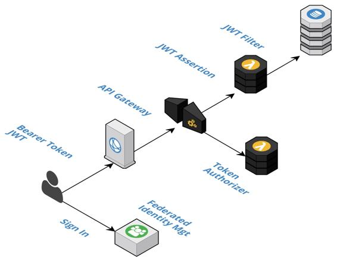

Application security
Up to this point, our focus has been on cloud-native security from the system perspective. The seams between all the layers are sealed and access to the system is tightly guarded. Now we turn our attention to securing the application of the system. We can loosely think of this as securing the users of the applications versus the owners of the system. If you are just a developer at heart, then this is where you may have traditionally started. However, as self-sufficient, full-stack teams, this is only part of our overall responsibility for security. We can say that we are no longer application engineers or system engineers; instead, we are now all cloud-native engineers.
As application engineers, we have all likely built a user management system of some sort or another. Fortunately, in cloud-native, this un-differentiated activity is now delegated to value-added cloud services that provide federated identity management capabilities and support standards, such as OAuth 2.0, OpenID Connect, and JSON Web Tokens (JWT). Our application and business logic are decoupled from the actual security mechanisms more so than ever before. As summarized in the following diagram, we will discuss how to integrate with federated identity management at the application, API Gateway, and business logic levels:
>
